层②是 ui-recast skill 独立产出的忠实复现——vanilla 单文件、零依赖、1:1 还原 bklit 上游（不掺本项目任何规范）；层③才是进记账软件时的适配版。每格附可交互复现页与五段复现记录。
charts/gauge.tsx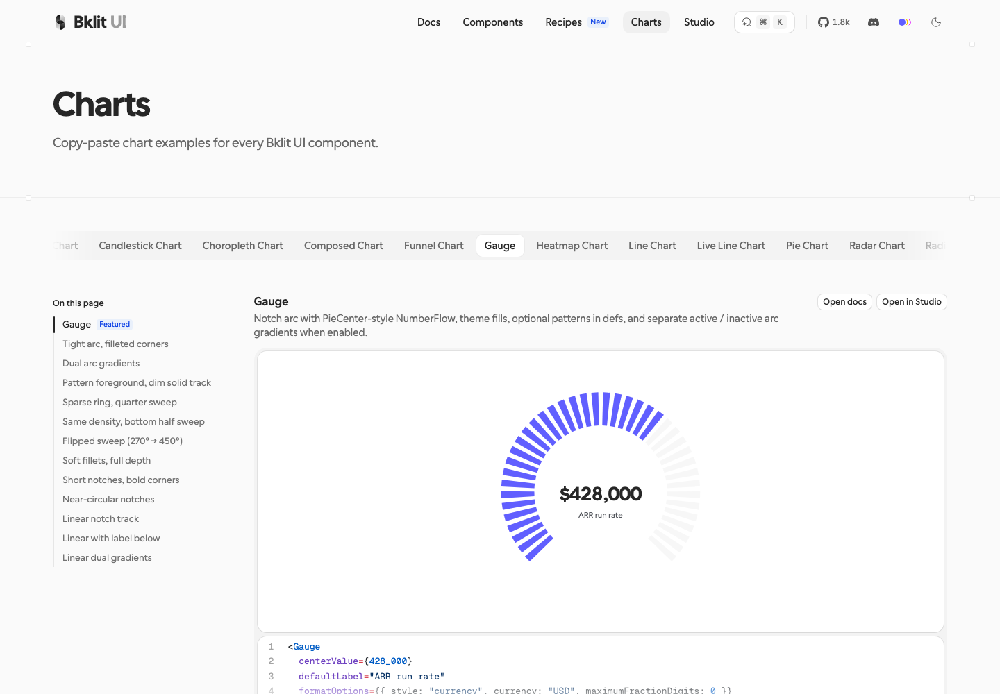
66/66 条 SVG path 逐位一致（40 背景 + 26 激活），填色/透明度直方图经 getComputedStyle 复测完全相同；viewBox 448×341.33（21:16）。上游无 hover 交互（源码证实），复现同样不发明交互。
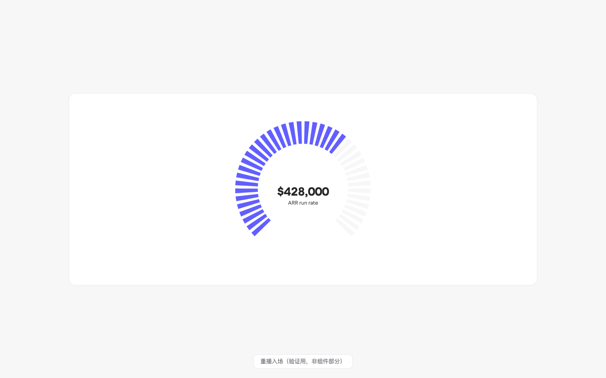
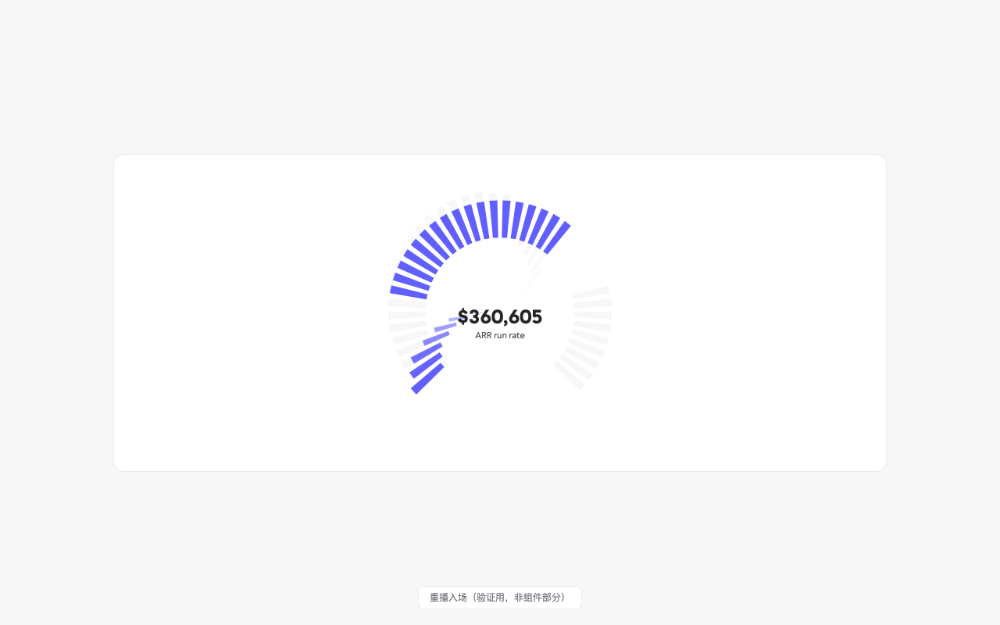
<!doctype html>
<html lang="zh">
<head>
<meta charset="utf-8">
<meta name="viewport" content="width=device-width, initial-scale=1">
<title>Gauge — bklit 1:1 复现</title>
<style>
/* ---- bklit 主题变量（自 www.bklit.com 实测 getComputedStyle） ---- */
:root {
--chart-1: oklch(0.585 0.233 277.117);
--border: color-mix(in oklab, #000 8%, transparent);
--foreground: lab(15.204% 0 0);
--chart-label: lab(36.1659% -0.483051 -3.71603);
--background: #fff;
}
@font-face {
font-family: "calSans";
src: url("./calsans.woff2") format("woff2");
font-weight: 400 800;
font-display: swap;
}
* { box-sizing: border-box; }
body {
margin: 0; min-height: 100vh; display: grid; place-items: center;
background: #f7f7f8;
font-family: calSans, "calSans Fallback", ui-sans-serif, system-ui, sans-serif;
}
/* ---- 官方文档卡片（实测：radius 14px / 1px 8% 黑边 / 白底 990×407） ---- */
.demo-card {
width: min(990px, calc(100vw - 48px));
min-height: 407px;
background: #fff;
border: 1px solid var(--border);
border-radius: 14px;
display: grid; place-items: center;
}
/* ---- 官方 demo 包裹（gauge-chart-demo.tsx：mx-auto w-full min-w-[300px] max-w-lg py-4） ---- */
.demo-wrap { width: 100%; min-width: 300px; max-width: 512px; padding: 16px 32px; }
/* ---- Gauge 默认容器（gauge.tsx：mx-auto aspect-[21/16] w-full max-w-[560px]） ---- */
.gauge-root { margin: 0 auto; width: 100%; max-width: 560px; aspect-ratio: 21 / 16; position: relative; }
.gauge-root svg { display: block; width: 100%; height: 100%; overflow: visible; }
/* ---- 中心块（GaugeArcInner：absolute inset-0 居中 + paddingTop size*0.08） ---- */
.gauge-center {
position: absolute; inset: 0; pointer-events: none;
display: flex; flex-direction: column; align-items: center; justify-content: center;
}
.gauge-value {
font-size: 24px; font-weight: 700; color: var(--foreground);
font-variant-numeric: tabular-nums; line-height: 1.2;
}
.gauge-label { margin-top: 2px; font-size: 10.85px; font-weight: 400; color: var(--chart-label); }
/* ---- 重播按钮（验证用，非组件部分） ---- */
.replay {
position: fixed; bottom: 20px; left: 50%; transform: translateX(-50%);
font: 12px/1 ui-sans-serif, system-ui; color: #71717a;
background: #fff; border: 1px solid var(--border); border-radius: 8px;
padding: 8px 14px; cursor: pointer;
}
</style>
</head>
<body>
<div class="demo-card">
<div class="demo-wrap">
<div class="gauge-root" id="gauge"></div>
</div>
</div>
<button class="replay" id="replay">重播入场（验证用，非组件部分）</button>
<script>
(() => {
"use strict";
// ===== 上游常量（gauge.tsx + gauge-chart-demo.tsx + notch-gauge-shared.ts，逐字对照） =====
const TOTAL_NOTCHES = 40;
const SPACING = 25; // demo spacing={25}
const NOTCH_CORNER_RADIUS = 0; // 默认 0
const UNIFORM_WIDTH = false; // 默认 false → 刻度向心收窄
const START_ANGLE = 135;
const END_ANGLE = 405; // 270° 弧，底部开口
const VALUE = 66; // demo value={66}
const CENTER_VALUE = 428000; // demo centerValue={428_000}
const DEFAULT_LABEL = "ARR run rate";
const INACTIVE_OPACITY = 0.4; // demo inactiveFillOpacity={0.4}（覆盖默认 0.8）
const ACTIVE_OPACITY = 1; // DEFAULT_ACTIVE_FILL_OPACITY
const SPRING = { stiffness: 300, damping: 20 }; // DEFAULT_NOTCH_ENTER_TRANSITION
const BG_DELAY = i => i * 0.015; // 背景刻度错峰
const ACTIVE_DELAY = i => (0.3 + i * 0.02) * 1; // 激活刻度错峰（enterStaggerScale=1）
const REDUCED = matchMedia("(prefers-reduced-motion: reduce)").matches;
const BG_FILL = "var(--border)";
const ACTIVE_FILL = "var(--chart-1)";
// ===== 几何（GaugeArcInner 数学，原样移植） =====
const root = document.getElementById("gauge");
const W = root.clientWidth, H = root.clientHeight;
const size = Math.min(W, H);
const centerX = W / 2, centerY = H / 2;
const outerRadius = size * 0.42;
const innerRadius = size * 0.28; // notchLengthPercent=100
const notchLength = outerRadius - innerRadius;
const activeNotches = Math.round((VALUE / 100) * TOTAL_NOTCHES);
const totalAngle = END_ANGLE - START_ANGLE; // 270
const availableAngle = totalAngle * (1 - SPACING / 100); // 202.5
const notchAngle = availableAngle / TOTAL_NOTCHES; // 5.0625
const gapAngle = (totalAngle * (SPACING / 100)) / (TOTAL_NOTCHES - 1); // 1.7308
const rad = deg => (deg * Math.PI) / 180;
const notches = Array.from({ length: TOTAL_NOTCHES }, (_, i) => {
const angle = START_ANGLE + i * (notchAngle + gapAngle) + notchAngle / 2;
const arcNotchWidth = notchAngle * 0.8;
const halfWidth = rad(arcNotchWidth) / 2;
const r = rad(angle);
const x1 = centerX + Math.cos(r - halfWidth) * outerRadius;
const y1 = centerY + Math.sin(r - halfWidth) * outerRadius;
const x2 = centerX + Math.cos(r + halfWidth) * outerRadius;
const y2 = centerY + Math.sin(r + halfWidth) * outerRadius;
// uniformWidth=false：内侧两点取内半径同角（向心收窄）
const x3 = centerX + Math.cos(r + halfWidth) * innerRadius;
const y3 = centerY + Math.sin(r + halfWidth) * innerRadius;
const x4 = centerX + Math.cos(r - halfWidth) * innerRadius;
const y4 = centerY + Math.sin(r - halfWidth) * innerRadius;
return { index: i, x1, y1, x2, y2, x3, y3, x4, y4, isActive: i < activeNotches };
});
const SVG_NS = "http://www.w3.org/2000/svg";
const svg = document.createElementNS(SVG_NS, "svg");
svg.setAttribute("viewBox", `0 0 ${W} ${H}`);
svg.setAttribute("aria-hidden", "true");
root.appendChild(svg);
const origin = `${centerX}px ${centerY}px`;
const makePath = (n, fill, fillOpacity) => {
const p = document.createElementNS(SVG_NS, "path");
p.setAttribute("d", `M ${n.x1} ${n.y1} L ${n.x2} ${n.y2} L ${n.x3} ${n.y3} L ${n.x4} ${n.y4} Z`);
p.setAttribute("fill", fill);
p.setAttribute("fill-opacity", String(fillOpacity));
p.style.transformOrigin = origin;
svg.appendChild(p);
return p;
};
// 背景 40 根 → 激活 26 根覆盖层（顺序与 GaugeNotchSvg 相同）
const bgPaths = notches.map(n => makePath(n, BG_FILL, INACTIVE_OPACITY));
const activePaths = notches.filter(n => n.isActive).map(n => makePath(n, ACTIVE_FILL, ACTIVE_OPACITY));
// ===== 中心块（PieCenterShell + ChartStatFlow 布局） =====
const center = document.createElement("div");
center.className = "gauge-center";
center.style.paddingTop = `${size * 0.08}px`;
const valueEl = document.createElement("div");
valueEl.className = "gauge-value";
const labelEl = document.createElement("div");
labelEl.className = "gauge-label";
labelEl.textContent = DEFAULT_LABEL;
center.append(valueEl, labelEl);
root.appendChild(center);
const fmt = new Intl.NumberFormat("en-US", { style: "currency", currency: "USD", maximumFractionDigits: 0 });
// ===== motion/react spring(300,20) 数值积分（mass=1） =====
function springTo(path, delaySec, reduced) {
let v = 0, vel = 0, last = null, elapsed = 0, done = false;
if (reduced) {
// 上游 reduced-motion：transition {duration:0} 但保留 stagger delay——到点直接就位
setTimeout(() => { path.style.transform = "scale(1)"; path.style.opacity = "1"; }, delaySec * 1000);
return;
}
function frame(now) {
if (last === null) last = now;
const dt = Math.min((now - last) / 1000, 1 / 30);
last = now;
elapsed += dt;
if (elapsed < delaySec) { requestAnimationFrame(frame); return; }
const step = Math.min(dt, 0.032);
const a = SPRING.stiffness * (1 - v) - SPRING.damping * vel;
vel += a * step;
v += vel * step;
path.style.transform = `scale(${v})`;
path.style.opacity = String(Math.max(0, Math.min(1, v)));
if (Math.abs(1 - v) < 0.001 && Math.abs(vel) < 0.001) {
path.style.transform = "scale(1)";
path.style.opacity = "1";
return;
}
requestAnimationFrame(frame);
}
requestAnimationFrame(frame);
}
// ===== 入场编排 =====
let introStarted = false;
function playIntro() {
if (introStarted) resetAndReplay();
introStarted = true;
for (let i = 0; i < TOTAL_NOTCHES; i++) springTo(bgPaths[i], BG_DELAY(i), REDUCED);
activePaths.forEach((p, k) => {
const notchIndex = notches[k].index; // 上游用原始 notch.index（0..25）
springTo(p, ACTIVE_DELAY(notchIndex), REDUCED);
});
// NumberFlow 入场：先画 0，双 rAF 后 0 → 428000 计数（计为拟合实现）
valueEl.textContent = fmt.format(0);
if (REDUCED) { valueEl.textContent = fmt.format(CENTER_VALUE); return; }
requestAnimationFrame(() => requestAnimationFrame(() => {
const t0 = performance.now(), DUR = 900;
(function tick(now) {
const t = Math.min(1, (now - t0) / DUR);
const eased = 1 - Math.pow(1 - t, 3);
valueEl.textContent = fmt.format(Math.round(CENTER_VALUE * eased));
if (t < 1) requestAnimationFrame(tick);
})(t0);
}));
}
function resetAndReplay() {
for (const p of [...bgPaths, ...activePaths]) {
p.style.transform = "scale(0)";
p.style.opacity = "0";
}
introStarted = false;
requestAnimationFrame(playIntro);
}
playIntro();
document.getElementById("replay").addEventListener("click", resetAndReplay);
})();
</script>
</body>
</html>
集成点：web/src/components/bklit/Gauge.tsx（BudgetGauge） —— 按本项目 achromatic 设计规范适配后投入使用。
charts/heatmap/heatmap-chart.tsx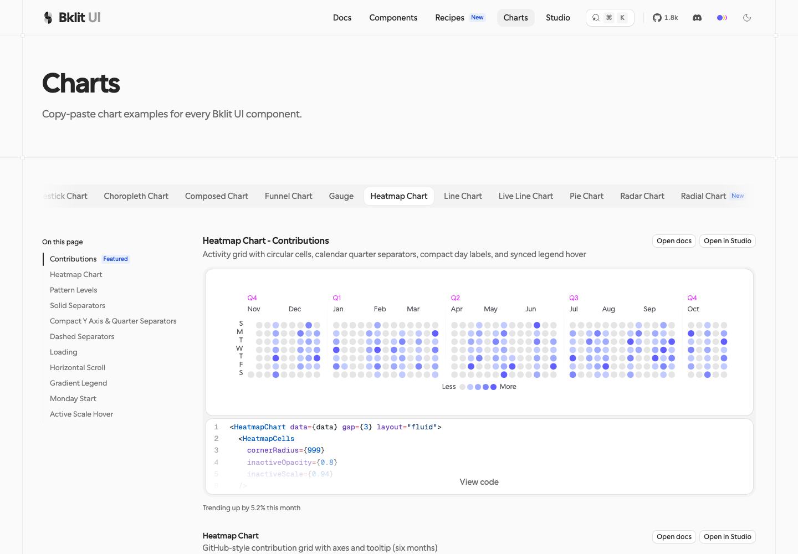
≈95%。全部可测几何/颜色/时序常量逐值命中（1.6s 入场 + 0.22s hover tween，概率分布校准到实测 202/80/42/23/18）；扣分项：calSans 私有字体回退、loading shimmer、tooltip 锚点细节。自纠错 3 轮（首版日期域被 probe5 证伪后按真实日历重推）。
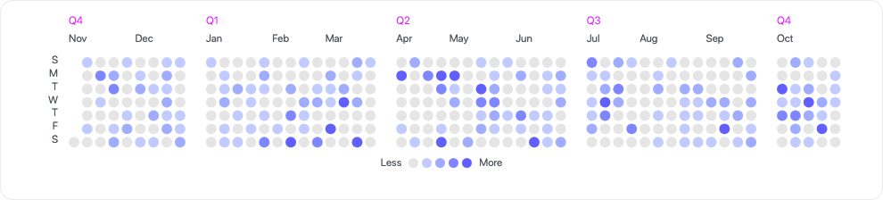
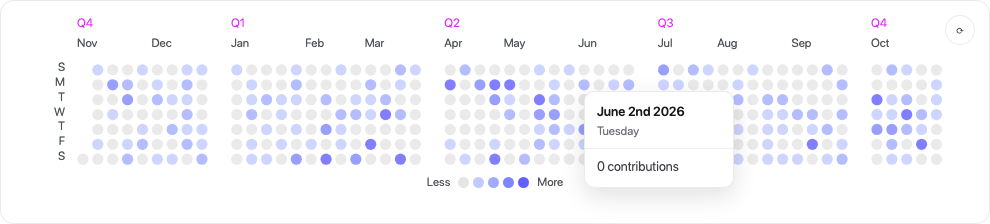
<!doctype html>
<html lang="en">
<head>
<meta charset="utf-8">
<title>Heatmap Chart - Contributions (bklit 1:1 reproduction)</title>
<style>
/* Reproduction of bklit.com/charts/heatmap-chart "Contributions" demo.
All values measured from the live render (probe, 2026-10-31):
cells 11.8756px, pitch 14.8756px (gap 3), rx 999, quarter separators 20px,
svg translate(44,28), margin.right 12, legend pt 20px centered. */
* { box-sizing: border-box; }
body {
margin: 0; padding: 40px 24px; background: #fff; color: lab(36.1659% -0.483051% -3.71603%);
font: 400 14px/1.5 ui-rounded, "SF Pro Rounded", system-ui, -apple-system, sans-serif;
display: flex; flex-direction: column; align-items: center; gap: 12px;
}
.demo-heading { width: 988.4px; max-width: 100%; }
.demo-heading h1 { font-size: 15px; font-weight: 700; margin: 0 0 4px; letter-spacing: .1px; }
.demo-heading p { margin: 0; font-size: 13px; color: #71717a; }
.card {
background: #fff; border: 1px solid oklab(0 0 0 / 0.08); border-radius: 14px;
padding: 32px; width: fit-content; position: relative;
}
.replay {
position: absolute; top: 14px; right: 14px; width: 30px; height: 30px; border-radius: 50%;
border: 1px solid oklab(0 0 0 / 0.08); background: #fff; cursor: pointer;
display: grid; place-items: center; color: #52525b; font-size: 13px; opacity: 0;
transition: opacity .2s ease;
}
.card:hover .replay { opacity: 1; }
svg { display: block; overflow: visible; }
/* Cell groups: scale + opacity hover choreography on the wrapper, like upstream motion.g */
.cell {
transform-box: fill-box; transform-origin: 50% 50%;
opacity: 0; /* enter: uniform 1600ms fade, ease cubic-bezier(.85,0,.916,.282) — stagger decays to 0 at defaults */
transition: opacity 1.6s cubic-bezier(.85, 0, .916, .282), transform .22s cubic-bezier(.4, 0, .2, 1);
}
body.entered .cell, body.settled .cell { opacity: 1; }
body.settled .cell { transition: opacity .22s cubic-bezier(.4, 0, .2, 1), transform .22s cubic-bezier(.4, 0, .2, 1); }
body.notrans .cell { transition: none !important; }
body.reduced-motion .cell { opacity: 1; transition: none; }
body.settled.dimming .cell:not(.highlight) { opacity: .8; transform: scale(.94); } /* inactiveOpacity .8, inactiveScale .94 */
@media (prefers-reduced-motion: reduce) {
.cell { transition: none !important; }
}
text { user-select: none; }
.t-quarter { fill: oklch(0.667 0.295 322.15); font-size: 12px; }
.t-month { fill: lab(36.1659% -0.483051% -3.71603%); font-size: 12px; }
.t-weekday { fill: lab(36.1659% -0.483051% -3.71603%); font-size: 12px; }
.legend {
display: flex; align-items: center; justify-content: center; gap: 4px; margin-top: 8px;
font-size: 12px; color: lab(36.1659% -0.483051% -3.71603%);
}
.legend .cap { margin: 0 4px; }
.legend .swatch { width: 11px; height: 11px; border-radius: 50%; cursor: default; }
.tooltip {
position: absolute; z-index: 5; pointer-events: none; background: #fff;
border: 1px solid oklab(0 0 0 / 0.08); border-radius: 10px; padding: 10px 12px;
box-shadow: 0 8px 24px rgba(0, 0, 0, .12); min-width: 150px;
opacity: 0; transform: translateY(3px); transition: opacity .15s ease, transform .15s ease;
}
.tooltip.show { opacity: 1; transform: translateY(0); }
.tooltip .date { font-size: 13px; font-weight: 600; color: #18181b; }
.tooltip .weekday { font-size: 12px; color: #71717a; margin-top: 1px; }
.tooltip .divider { height: 1px; background: oklab(0 0 0 / 0.06); margin: 8px -12px; }
.tooltip .count { font-size: 13px; color: #3f3f46; }
</style>
</head>
<body>
<div class="demo-heading">
<h1>Heatmap Chart - Contributions</h1>
<p>Activity grid with circular cells, calendar quarter separators, compact day labels, and synced legend hover</p>
</div>
<div class="card" id="card">
<button class="replay" id="replay" title="Replay animation">⟳</button>
<svg id="chart" aria-hidden="true"></svg>
<div class="legend" id="legend"></div>
<div class="tooltip" id="tooltip">
<div class="date"></div><div class="weekday"></div>
<div class="divider"></div><div class="count"></div>
</div>
</div>
<script>
"use strict";
/* ---- exact measured constants ---- */
const CELL = 11.87558962264151, GAP = 3, PITCH = CELL + GAP; // 14.8756
const MARGIN = { left: 44, top: 28, right: 12, bottom: 0 };
const COLS = 53, ROWS = 7, SEP = 20; // quarter separator spacing
const SEP_AFTER = new Set([8, 21, 34, 47]); // before the Jan / Apr / Jul / Oct label columns
const LEVELS = [
"lab(90.952% 0 -0.0000119209)", // --chart-scale-01 empty
"color-mix(in oklab, oklch(0.585 0.233 277.117) 35%, lab(100% 0 0))",
"color-mix(in oklab, oklch(0.585 0.233 277.117) 55%, lab(100% 0 0))",
"color-mix(in oklab, oklch(0.585 0.233 277.117) 78%, lab(100% 0 0))",
"oklch(0.585 0.233 277.117)", // --chart-scale-05
];
const INACTIVE_OPACITY = 0.8, INACTIVE_SCALE = 0.94; // demo props
const COUNTS = [0, 2, 5, 9, 14]; // representative count per level
/* ---- data: Nov 1 2025 (Sat) .. Oct 31 2026 — first column holds only the bottom cell,
last column is a full week; ghosts outside the range are omitted from the DOM (365 visible) ---- */
function mulberry32(seed) { let a = seed; return () => { a |= 0; a = (a + 0x6D2B79F5) | 0;
let t = Math.imul(a ^ (a >>> 15), 1 | a); t = (t + Math.imul(t ^ (t >>> 7), 61 | t)) ^ t;
return ((t ^ (t >>> 14)) >>> 0) / 4294967296; }; }
const rand = mulberry32(20261031);
const P = [0.553, 0.219, 0.115, 0.063, 0.049]; // measured level distribution
const RANGE_START = new Date(2025, 9, 26); // Sunday of the first column
const RANGE_END = new Date(2026, 9, 31); // "today" — full last week
const data = [];
for (let c = 0; c < COLS; c++) {
const bins = [];
for (let r = 0; r < ROWS; r++) {
const day = new Date(RANGE_START); day.setDate(day.getDate() + c * 7 + r);
const ghost = day < new Date(2025, 10, 1) || day > RANGE_END;
let level = 0; const roll = rand();
for (let i = 0, acc = 0; i < 5; i++) { acc += P[i]; if (roll < acc) { level = i; break; } }
bins.push({ date: day, level: ghost ? -1 : level, ghost });
}
data.push(bins);
}
/* ---- layout ---- */
function colX(c) { return c * PITCH + [...SEP_AFTER].filter(i => i < c).length * SEP; }
const GRID_W = COLS * PITCH + 4 * SEP;
const SVG_W = MARGIN.left + GRID_W + MARGIN.right;
const SVG_H = MARGIN.top + ROWS * PITCH;
const svg = document.getElementById("chart");
svg.setAttribute("width", SVG_W); svg.setAttribute("height", SVG_H);
const NS = "http://www.w3.org/2000/svg";
const root = document.createElementNS(NS, "g");
root.setAttribute("transform", `translate(${MARGIN.left},${MARGIN.top})`);
svg.appendChild(root);
const text = (cls, x, y, str, anchor) => {
const t = document.createElementNS(NS, "text");
t.setAttribute("class", cls); t.setAttribute("x", x); t.setAttribute("y", y);
if (anchor) t.setAttribute("text-anchor", anchor); t.textContent = str;
return t;
};
/* labels: quarters (violet) share the x of their first month; month column = ceil(firstDay/7)
(measured rule, fits all 12 months); separators sit before cols 9/22/35/48 */
const MONTHS = ["January","February","March","April","May","June","July","August","September","October","November","December"];
const QTRS = [[0, "Q4"], [9, "Q1"], [22, "Q2"], [35, "Q3"], [48, "Q4"]];
const MONTH_START = [[0,"Nov"],[5,"Dec"],[9,"Jan"],[14,"Feb"],[18,"Mar"],[22,"Apr"],[26,"May"],[31,"Jun"],[35,"Jul"],[39,"Aug"],[44,"Sep"],[48,"Oct"]];
for (const [c, label] of QTRS) root.appendChild(text("t-quarter", colX(c), -34, label));
for (const [c, label] of MONTH_START) root.appendChild(text("t-month", colX(c), -14, label));
"SMTWTFS".split("").forEach((ch, r) => root.appendChild(text("t-weekday", -12, r * PITCH + CELL / 2 + 4, ch, "end")));
/* cells: wrapper g (hover scale/opacity) + data rect; upstream also has an empty-color
shimmer overlay rect at opacity 0 — present only during status="loading", omitted here. */
const cellEls = [];
for (let c = 0; c < COLS; c++) {
for (let r = 0; r < ROWS; r++) {
const bin = data[c][r];
if (bin.ghost) continue;
const g = document.createElementNS(NS, "g");
g.setAttribute("class", "cell");
const rect = document.createElementNS(NS, "rect");
rect.setAttribute("width", CELL); rect.setAttribute("height", CELL);
rect.setAttribute("x", colX(c)); rect.setAttribute("y", GAP + r * PITCH);
rect.setAttribute("rx", 999); rect.setAttribute("ry", 999);
rect.setAttribute("fill", LEVELS[bin.level]);
rect.style.cursor = "pointer";
g.appendChild(rect);
g.addEventListener("pointerenter", () => setHover(c, r));
g.addEventListener("pointerleave", () => setHover(null));
root.appendChild(g);
cellEls.push({ c, r, bin, g });
}
}
/* legend: Less ●●●●● More, level-hover syncs the grid */
const legend = document.getElementById("legend");
legend.appendChild(Object.assign(document.createElement("span"), { className: "cap", textContent: "Less" }));
LEVELS.forEach((fill, level) => {
const sw = document.createElement("span");
sw.className = "swatch"; sw.style.background = fill;
sw.addEventListener("pointerenter", () => setLevelHover(level));
sw.addEventListener("pointerleave", () => setLevelHover(null));
legend.appendChild(sw);
});
legend.appendChild(Object.assign(document.createElement("span"), { className: "cap", textContent: "More" }));
/* ---- interaction: hovered cell highlighted, all others dim + scale (0.22s tween) ---- */
const tooltip = document.getElementById("tooltip");
const card = document.getElementById("card");
const ordinal = d => d + (d % 10 === 1 && d !== 11 ? "st" : d % 10 === 2 && d !== 12 ? "nd" : d % 10 === 3 && d !== 13 ? "rd" : "th");
function setHover(hc, hr) {
clearClasses();
if (hc === null) { tooltip.classList.remove("show"); return; }
document.body.classList.add("dimming");
for (const cell of cellEls) {
if (cell.c === hc && cell.r === hr) cell.g.classList.add("highlight");
}
const cell = cellEls.find(k => k.c === hc && k.r === hr);
const d = cell.bin.date;
tooltip.querySelector(".date").textContent = `${MONTHS[d.getMonth()]} ${ordinal(d.getDate())} ${d.getFullYear()}`;
tooltip.querySelector(".weekday").textContent = ["Sunday","Monday","Tuesday","Wednesday","Thursday","Friday","Saturday"][d.getDay()];
tooltip.querySelector(".count").textContent = `${COUNTS[cell.bin.level]} contribution${COUNTS[cell.bin.level] === 1 ? "" : "s"}`;
const gx = colX(hc) + CELL / 2 + MARGIN.left + 32, gy = hr * PITCH + MARGIN.top + 32;
tooltip.style.left = Math.min(gx, SVG_W + 64 - 170) + "px";
tooltip.style.top = gy + "px";
tooltip.classList.add("show");
}
function setLevelHover(level) {
clearClasses();
if (level === null) return;
document.body.classList.add("dimming");
for (const cell of cellEls) if (cell.bin.level === level) cell.g.classList.add("highlight");
}
function clearClasses() {
document.body.classList.remove("dimming");
for (const cell of cellEls) cell.g.classList.remove("highlight");
}
/* ---- enter: uniform 1600ms fade (defaults produce zero stagger), reduced-motion snaps;
after settle, opacity tweens drop to the 0.22s inactive transition (as upstream does) ---- */
const reduced = matchMedia("(prefers-reduced-motion: reduce)").matches;
if (reduced) document.body.classList.add("reduced-motion");
function playEnter() {
document.body.classList.remove("entered", "settled");
if (reduced) { document.body.classList.add("settled"); return; }
requestAnimationFrame(() => requestAnimationFrame(() => {
document.body.classList.add("entered");
setTimeout(() => { document.body.classList.remove("entered"); document.body.classList.add("settled"); }, 1650);
}));
}
playEnter();
document.getElementById("replay").addEventListener("click", () => {
document.body.classList.add("notrans");
void document.body.offsetWidth;
document.body.classList.remove("entered", "settled", "notrans");
playEnter();
});
</script>
</body>
</html>
集成点：web/src/components/bklit/Heatmap.tsx（BklitHeatmap） —— 按本项目 achromatic 设计规范适配后投入使用。
charts/profit-loss-line.tsx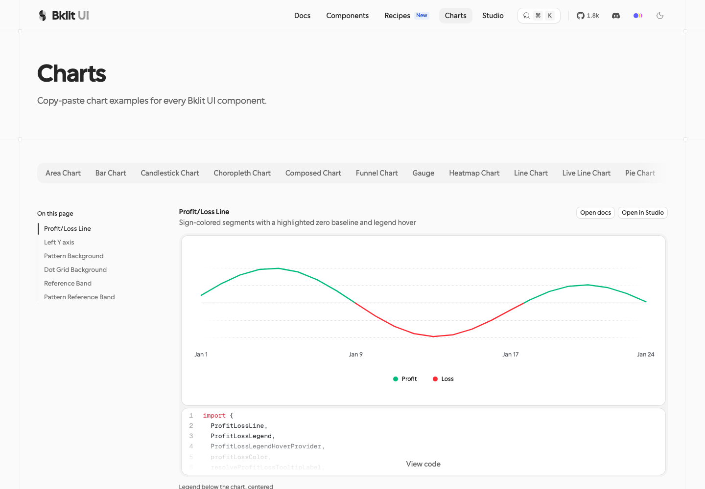
几何 1:1：28/28 折线顶点偏差 0.0000px（3 位小数），5 条网格线 ~0.005px，y 域 [-1200,1200]、clip 几何、1100ms cubic-bezier(0.85,0,0.15,1) 入场、tooltip 盒模型、图例 dim 0.25/0.4 全按实测照抄。忠实保留了上游"精确零值不分段"的行为（已验证 [5,0,-3]→单段）。
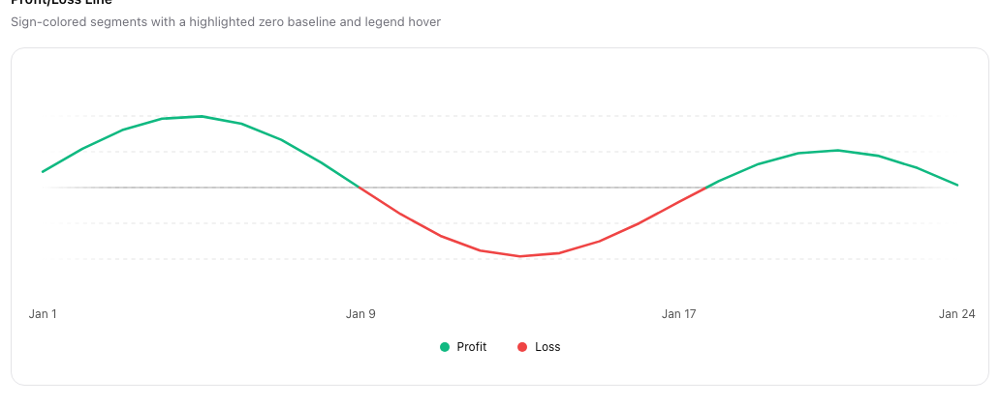
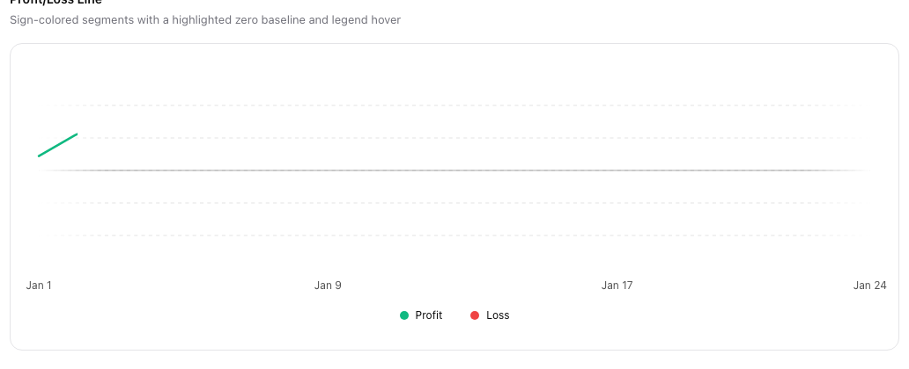
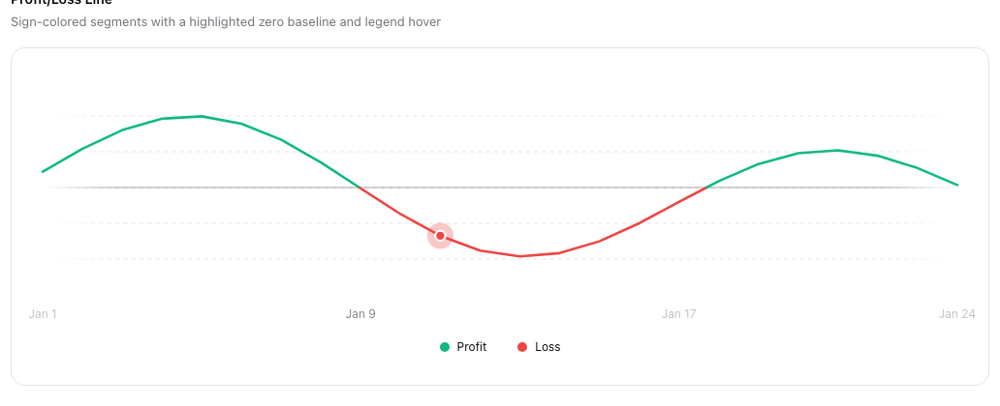
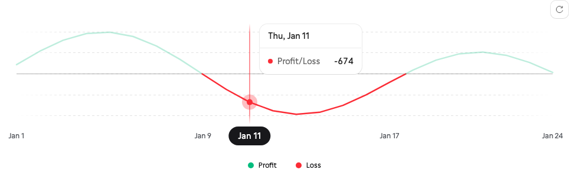
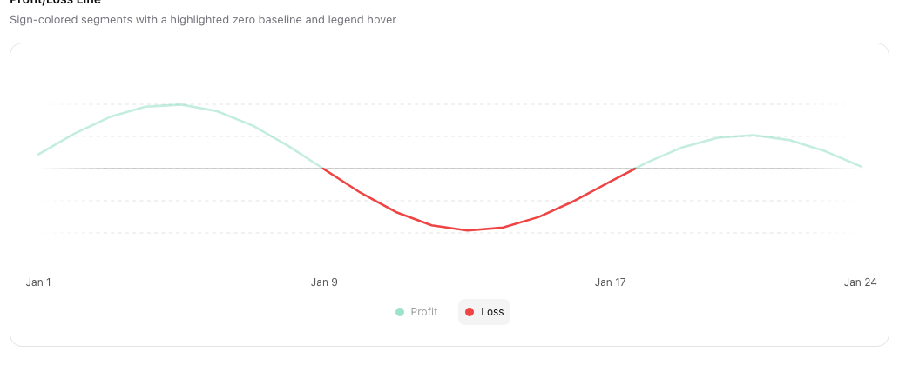
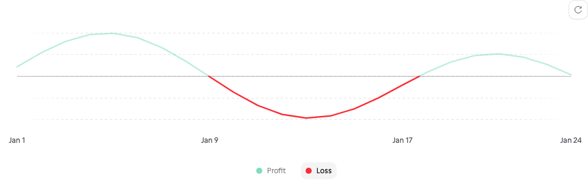
<!doctype html>
<html lang="en">
<head>
<meta charset="utf-8">
<meta name="viewport" content="width=device-width, initial-scale=1">
<title>Profit/Loss Line — Bklit UI reproduction</title>
<style>
:root {
--chart-positive: #10b981; /* oklch(0.696 0.17 162.48) — emerald-500 */
--chart-negative: #ef4444; /* oklch(0.637 0.237 25.331) — red-500 */
--chart-grid: #e4e4e4; /* lab(90.372% 0 0) */
--chart-label: #525252; /* lab(36.17% …) */
--foreground: #0a0a0a; /* lab(15.2% 0 0) — neutral-950 */
--chart-foreground-muted: #d4d4d4;
--chart-tooltip-background: #ffffff;
--chart-tooltip-foreground: #0a0a0a;
--chart-tooltip-muted: #71717a;
--border: rgba(0, 0, 0, 0.08);
--legend-muted: #f4f4f5;
}
* { box-sizing: border-box; }
body {
margin: 0; padding: 48px 32px 80px; background: #ffffff; color: var(--foreground);
font: 14px/1.5 -apple-system, BlinkMacSystemFont, "Segoe UI", Inter, sans-serif;
-webkit-font-smoothing: antialiased;
}
main { max-width: 1010px; margin: 0 auto; }
h1 { font-size: 14px; font-weight: 600; margin: 0 0 4px; }
.sub { margin: 0 0 16px; color: var(--chart-tooltip-muted); font-size: 13px; }
.frame {
background: #fff; border: 1px solid #e4e4e7; border-radius: 14px; padding: 24px;
}
.chart-zone { position: relative; width: 100%; }
.chart-zone svg { display: block; width: 100%; height: auto; }
.xaxis { position: relative; height: 20px; margin-top: 2px; }
.xtick {
position: absolute; top: 0; transform: translateX(-50%);
font-size: 12px; color: var(--chart-label); white-space: nowrap;
}
.tooltip {
position: absolute; z-index: 5; min-width: 160px; pointer-events: none;
background: var(--chart-tooltip-background); border: 1px solid var(--border);
border-radius: 14px; box-shadow: 0 12px 32px rgba(0,0,0,0.10), 0 2px 8px rgba(0,0,0,0.05);
overflow: hidden; transition: transform 150ms ease-out;
}
.tooltip.hidden { display: none; }
.tooltip-head {
padding: 10px 14px; font-size: 13px; font-weight: 500; text-align: left;
border-bottom: 1px solid var(--border); color: var(--chart-tooltip-foreground);
}
.tooltip-body { padding: 8px 14px 10px; }
.tooltip-row { display: flex; align-items: center; justify-content: space-between; gap: 24px; }
.tooltip-label { display: flex; align-items: center; gap: 8px; min-width: 0; }
.tooltip-indicator { width: 10px; height: 10px; border-radius: 999px; flex: none; }
.tooltip-row .name { font-size: 13px; color: var(--chart-tooltip-muted); }
.tooltip-row .value { font-size: 13px; font-weight: 500; font-variant-numeric: tabular-nums; text-align: right; }
.legend { display: flex; justify-content: center; gap: 16px; flex-wrap: wrap; width: 100%; padding: 8px 4px 0; }
.legend-item {
display: flex; align-items: center; gap: 8px; border: 0; background: transparent;
font: inherit; font-size: 12px; color: var(--foreground);
padding: 6px 8px; border-radius: 8px; cursor: pointer;
transition: all 150ms ease-out;
}
.legend-item:hover { background: var(--legend-muted); }
.legend-item.faded { opacity: 0.4; }
.legend-marker { width: 10px; height: 10px; border-radius: 999px; flex: none; }
</style>
</head>
<body>
<main>
<h1>Profit/Loss Line</h1>
<p class="sub">Sign-colored segments with a highlighted zero baseline and legend hover</p>
<div class="frame">
<div class="chart-zone" id="chartZone">
<svg id="chart" role="img" aria-label="Profit and loss line chart"></svg>
<div class="xaxis" id="xaxis"></div>
<div class="tooltip hidden" id="tooltip">
<div class="tooltip-head" id="tooltipHead"></div>
<div class="tooltip-body">
<div class="tooltip-row">
<div class="tooltip-label"><span class="tooltip-indicator" id="tooltipIndicator"></span><span class="name">Profit/Loss</span></div>
<span class="value" id="tooltipValue"></span>
</div>
</div>
</div>
</div>
<div class="legend" id="legend">
<button type="button" class="legend-item" data-index="0"><span class="legend-marker" style="background: var(--chart-positive)"></span>Profit</button>
<button type="button" class="legend-item" data-index="1"><span class="legend-marker" style="background: var(--chart-negative)"></span>Loss</button>
</div>
</div>
</main>
<script>
"use strict";
/* ── Demo data — verbatim from apps/web/components/docs/profit-loss-line-docs-data.ts ── */
const DATA_KEY = "pnl";
const data = Array.from({ length: 24 }, (_, index) => {
const pnl = Math.round(
Math.sin(index / 2.5) * 800 + Math.cos(index / 6) * 400 + (index - 12) * 15
);
return { date: new Date(2024, 0, index + 1), [DATA_KEY]: pnl };
});
/* ── Segmentation — verbatim port of packages/ui/src/charts/profit-loss-segments.ts.
Faithfully preserves upstream behavior: exact zeros do NOT split segments. ── */
function resolveSign(value, fallback) {
if (value > 0) return "positive";
if (value < 0) return "negative";
return fallback;
}
function findInitialSign(rows) {
for (const row of rows) {
const value = row[DATA_KEY];
if (typeof value !== "number") continue;
if (value > 0) return "positive";
if (value < 0) return "negative";
}
return "positive";
}
function interpolateZeroCrossing(a, b) {
const ya = a[DATA_KEY], yb = b[DATA_KEY];
const t = ya / (ya - yb);
const start = a.date.getTime(), end = b.date.getTime();
return { ...a, date: new Date(start + t * (end - start)), [DATA_KEY]: 0 };
}
function splitProfitLossSegments(rows) {
if (rows.length === 0) return [];
const segments = [];
let currentSign = findInitialSign(rows);
let currentSegment = [rows[0]];
for (let i = 0; i < rows.length - 1; i++) {
const a = rows[i], b = rows[i + 1];
const ya = a[DATA_KEY], yb = b[DATA_KEY];
if (typeof ya === "number" && typeof yb === "number" && ya !== 0 && yb !== 0 && Math.sign(ya) !== Math.sign(yb)) {
const cross = interpolateZeroCrossing(a, b);
currentSegment.push(cross);
segments.push({ data: currentSegment, isPositive: currentSign === "positive" });
currentSegment = [cross, b];
currentSign = resolveSign(yb, currentSign);
continue;
}
currentSegment.push(b);
if (typeof yb === "number" && yb !== 0) currentSign = resolveSign(yb, currentSign);
}
if (currentSegment.length > 0) segments.push({ data: currentSegment, isPositive: currentSign === "positive" });
return segments;
}
/* ── Scales & ticks ── */
/* Margins measured from the live demo: inner box 908.406 × 171.094 inside a 924×231 svg */
const MARGIN = { top: 29.953, right: 7.797, bottom: 29.953, left: 7.797 };
const CLIP_PAD = 24; // bleed so strokes at edges aren't cut (ChartRevealClip padding)
const SVG_W = 924, SVG_H = 231; // docs demo frame as captured (924×231)
const INNER_W = SVG_W - MARGIN.left - MARGIN.right; // 908
const INNER_H = SVG_H - MARGIN.top - MARGIN.bottom; // 171
const xScale = date => ((date.getTime() - data[0].date.getTime()) /
(data[data.length - 1].date.getTime() - data[0].date.getTime())) * INNER_W;
function niceTicks(min, max, count) {
// d3-scale tickStep algorithm
const step0 = Math.abs(max - min) / Math.max(1, count);
const mag = Math.pow(10, Math.floor(Math.log10(step0)));
const err = step0 / mag;
const step = (err >= 7.5 ? 10 : err >= 3 ? 5 : err >= 1.5 ? 2 : 1) * mag;
const start = Math.ceil(min / step) * step;
const ticks = [];
for (let v = start; v <= max + step * 1e-6; v += step) ticks.push(Math.abs(v) < step * 1e-6 ? 0 : v);
return ticks;
}
const values = data.map(d => d[DATA_KEY]);
const yMin = Math.min(...values), yMax = Math.max(...values);
// Measured from the live demo DOM: 5 dashed rows at 1/12, 7/24, 1/2, 17/24, 11/12
// of inner height, zero exactly centered → y domain [-1200, 1200], ticks ±500/±1000.
// (Upstream nice/padding mechanism not read; output geometry is exact.)
const domainMin = -1200;
const domainMax = 1200;
const ticks = [-1000, -500, 0, 500, 1000];
const yScale = v => INNER_H - ((v - domainMin) / (domainMax - domainMin)) * INNER_H;
/* ── SVG construction ── */
const NS = "http://www.w3.org/2000/svg";
const svg = document.getElementById("chart");
svg.setAttribute("viewBox", `0 0 ${SVG_W} ${SVG_H}`);
const el = (name, attrs, parent) => {
const node = document.createElementNS(NS, name);
for (const [k, v] of Object.entries(attrs)) node.setAttribute(k, v);
(parent || svg).appendChild(node);
return node;
};
const inner = el("g", { transform: `translate(${MARGIN.left},${MARGIN.top})` });
// Grid: dashed rows at nice ticks (stroke var(--chart-grid), width 1, dash "4,4")
for (const t of ticks) {
el("line", {
x1: 0, x2: INNER_W, y1: yScale(t), y2: yScale(t),
stroke: "var(--chart-grid)", "stroke-width": 1, "stroke-dasharray": "4,4",
}, inner);
}
// Zero baseline: highlightRowValues={[0]} — var(--foreground), solid, opacity 0.35
el("line", {
x1: 0, x2: INNER_W, y1: yScale(0), y2: yScale(0),
stroke: "var(--foreground)", "stroke-width": 1, "stroke-opacity": 0.35,
}, inner);
// Edge-fade overlay on grid rows (grid-rows-fade gradient rect, upstream default on)
const defs = el("defs", {}, svg);
const fadeGrad = el("linearGradient", { id: "grid-rows-fade-gradient" }, defs);
el("stop", { offset: "0", "stop-color": "#ffffff", "stop-opacity": 1 }, fadeGrad);
el("stop", { offset: "0.08", "stop-color": "#ffffff", "stop-opacity": 0 }, fadeGrad);
el("stop", { offset: "0.92", "stop-color": "#ffffff", "stop-opacity": 0 }, fadeGrad);
el("stop", { offset: "1", "stop-color": "#ffffff", "stop-opacity": 1 }, fadeGrad);
el("rect", { x: 0, y: -4, width: INNER_W, height: INNER_H + 8, fill: "url(#grid-rows-fade-gradient)" }, inner);
// Reveal clip: ChartRevealClip — width grows 0 → padded full, LTR tween
const clipDef = el("clipPath", { id: "chart-grow-clip-repro" }, defs);
const clipRect = el("rect", {
x: -CLIP_PAD, y: -CLIP_PAD,
width: 0, height: INNER_H + CLIP_PAD * 2,
}, clipDef);
// Segments — each <g opacity> mirrors ProfitLossLine's per-segment group
const seriesG = el("g", { "clip-path": "url(#chart-grow-clip-repro)" }, inner);
const segments = splitProfitLossSegments(data);
const segmentGroups = segments.map(seg => {
const g = el("g", {
opacity: 1,
style: "transition: opacity 0.2s ease-in-out",
}, seriesG);
const d = seg.data.map((row, i) =>
`${i === 0 ? "M" : "L"}${xScale(row.date).toFixed(3)},${yScale(row[DATA_KEY]).toFixed(3)}`
).join("");
el("path", {
d,
fill: "none",
stroke: seg.isPositive ? "var(--chart-positive)" : "var(--chart-negative)",
"stroke-width": 2.5,
"stroke-linecap": "round",
"stroke-linejoin": "round",
}, g);
return g;
});
// Tooltip dot — TooltipDot: halo 2.6×r5 @0.3 + core r5
const dotHalo = el("circle", { r: 13, opacity: 0.3, fill: "var(--chart-positive)", visibility: "hidden" }, inner);
const dotCore = el("circle", { r: 5, fill: "var(--chart-positive)", stroke: "var(--chart-tooltip-background)", "stroke-width": 2, visibility: "hidden" }, inner);
// Entry reveal — 1100ms tween, cubic-bezier(0.85, 0, 0.15, 1), width 0 → padded full
const TARGET_W = INNER_W + CLIP_PAD * 2;
(function reveal() {
const start = performance.now();
const DURATION = 1100;
const bez = t => { // cubic-bezier(0.85, 0, 0.15, 1) solver
if (t <= 0) return 0;
if (t >= 1) return 1;
const cx = 3 * 0.85, bx = 3 * (1 - 0.85) - cx, ax = 1 - cx - bx;
const cy = 3 * 0, by = 3 * (1 - 0) - cy, ay = 1 - cy - by;
const sampleX = t2 => ((ax * t2 + bx) * t2 + cx) * t2;
const sampleDX = t2 => (3 * ax * t2 + 2 * bx) * t2 + cx;
let guess = t;
for (let i = 0; i < 6; i++) guess -= (sampleX(guess) - t) / (sampleDX(guess) || 1e-6);
return Math.min(1, Math.max(0, ((ay * guess + by) * guess + cy) * guess));
};
const frame = now => {
const t = Math.min(1, (now - start) / DURATION);
clipRect.setAttribute("width", (bez(t) * TARGET_W).toFixed(2));
if (t < 1) requestAnimationFrame(frame);
};
requestAnimationFrame(frame);
})();
/* ── X axis — HTML ticker; upstream renders indices 0/8/16/23 (Jan 1/9/17/24) ── */
const xaxis = document.getElementById("xaxis");
const step = Math.round((data.length - 1) / 3); // 8
const tickIndices = [];
for (let i = 0; i < data.length - 1; i += step) tickIndices.push(i);
tickIndices.push(data.length - 1);
const tickEls = tickIndices.map(i => {
const span = document.createElement("span");
span.className = "xtick";
const px = MARGIN.left + xScale(data[i].date);
span.style.left = `${(px / SVG_W) * 100}%`;
span.textContent = data[i].date.toLocaleDateString("en-US", { month: "short", day: "numeric" });
xaxis.appendChild(span);
return span;
});
/* ── Tooltip + dot + ticker fade — pointer tracking over the plot ── */
const zone = document.getElementById("chartZone");
const tooltip = document.getElementById("tooltip");
const tooltipHead = document.getElementById("tooltipHead");
const tooltipIndicator = document.getElementById("tooltipIndicator");
const tooltipValue = document.getElementById("tooltipValue");
const intFmt = v => v.toLocaleString("en-US");
function setDot(index) {
const row = data[index];
const x = xScale(row.date), y = yScale(row[DATA_KEY]);
const color = row[DATA_KEY] >= 0 ? "var(--chart-positive)" : "var(--chart-negative)";
for (const c of [dotHalo, dotCore]) {
c.setAttribute("cx", x); c.setAttribute("cy", y);
c.setAttribute("fill", color);
c.setAttribute("visibility", "visible");
}
tooltipIndicator.style.background = color;
tooltipHead.textContent = row.date.toLocaleDateString("en-US", { weekday: "short", month: "short", day: "numeric" });
tooltipValue.textContent = intFmt(row[DATA_KEY]);
}
zone.addEventListener("pointermove", event => {
const rect = svg.getBoundingClientRect();
const px = ((event.clientX - rect.left) / rect.width) * SVG_W - MARGIN.left;
if (px < -20 || px > INNER_W + 20) { hideTooltip(); return; }
let best = 0;
for (let i = 1; i < data.length; i++) {
if (Math.abs(xScale(data[i].date) - px) < Math.abs(xScale(data[best].date) - px)) best = i;
}
setDot(best);
tooltip.classList.remove("hidden");
const pointX = MARGIN.left + xScale(data[best].date);
const pointY = MARGIN.top + yScale(data[best][DATA_KEY]);
const zoneRect = zone.getBoundingClientRect();
const scale = zoneRect.width / SVG_W;
const tipW = tooltip.offsetWidth, tipH = tooltip.offsetHeight;
let left = pointX * scale + 18;
if (left + tipW > zoneRect.width - 8) left = pointX * scale - tipW - 18;
let top = pointY * scale - tipH / 2;
top = Math.max(4, Math.min(zoneRect.height - tipH - 4, top));
tooltip.style.transform = `translate(${left.toFixed(1)}px, ${top.toFixed(1)}px)`;
// Ticker fade: labels within 50px of the cursor stay full, fading to the edges
const cursorX = (event.clientX - xaxis.getBoundingClientRect().left);
for (let i = 0; i < tickEls.length; i++) {
const tx = tickEls[i].offsetLeft + tickEls[i].offsetWidth / 2;
const dist = Math.abs(tx - cursorX);
const op = dist < 50 ? 1 : Math.max(0.35, 1 - (dist - 50) / 100);
tickEls[i].style.opacity = op.toFixed(2);
}
});
function hideTooltip() {
tooltip.classList.add("hidden");
dotHalo.setAttribute("visibility", "hidden");
dotCore.setAttribute("visibility", "hidden");
for (const t of tickEls) t.style.opacity = "";
}
zone.addEventListener("pointerleave", hideTooltip);
/* ── Legend hover → dim opposite segments (0.25, 0.2s ease-in-out) ── */
const items = [...document.querySelectorAll(".legend-item")];
items.forEach(item => {
item.addEventListener("mouseenter", () => setLegendHover(Number(item.dataset.index)));
item.addEventListener("mouseleave", () => setLegendHover(null));
item.addEventListener("focus", () => setLegendHover(Number(item.dataset.index)));
item.addEventListener("blur", () => setLegendHover(null));
});
function setLegendHover(index) {
items.forEach(item => {
const i = Number(item.dataset.index);
item.classList.toggle("faded", index !== null && index !== i);
});
segmentGroups.forEach((g, i) => {
const segSign = segments[i].isPositive ? 0 : 1;
const dimmed = index !== null && index !== segSign;
g.setAttribute("opacity", dimmed ? 0.25 : 1);
});
}
</script>
</body>
</html>
集成点：web/src/components/bklit/ProfitLossLine.tsx（ProfitLossLine） —— 按本项目 achromatic 设计规范适配后投入使用。
blocks/stat-card-*.tsx≈95%。数值/徽章/hover 读数（Dec $8,800 +15.8%、负向 -21.5% 红 badge、离开恢复 Avg）全部 Playwright 断言一致；190px 出血、0.45→0 渐变、hover 弹簧 stiffness 300/damping 30 逐项对源码。NumberFlow 无 vanilla 等价物，滚动数字以同级时长自定替代并已在 record 声明。
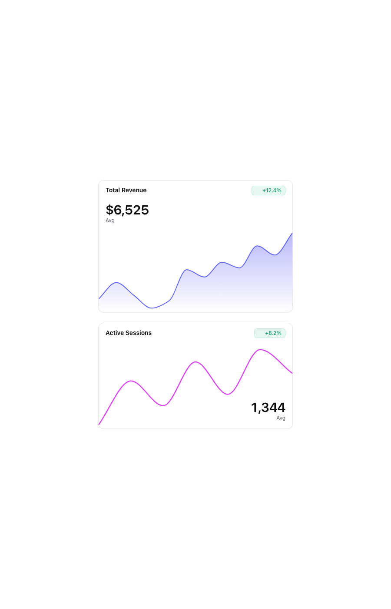
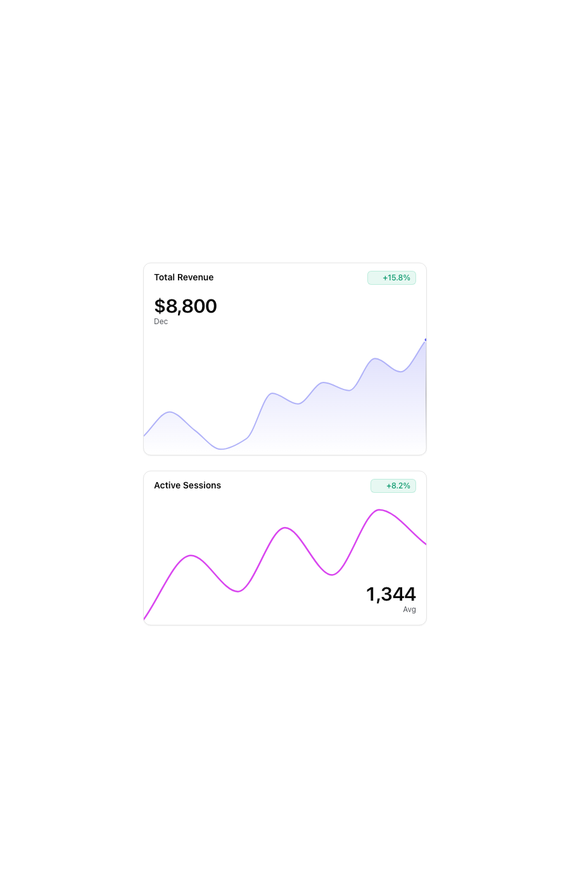
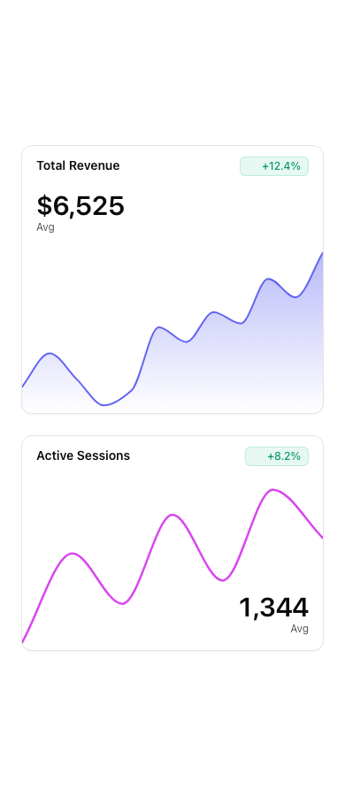
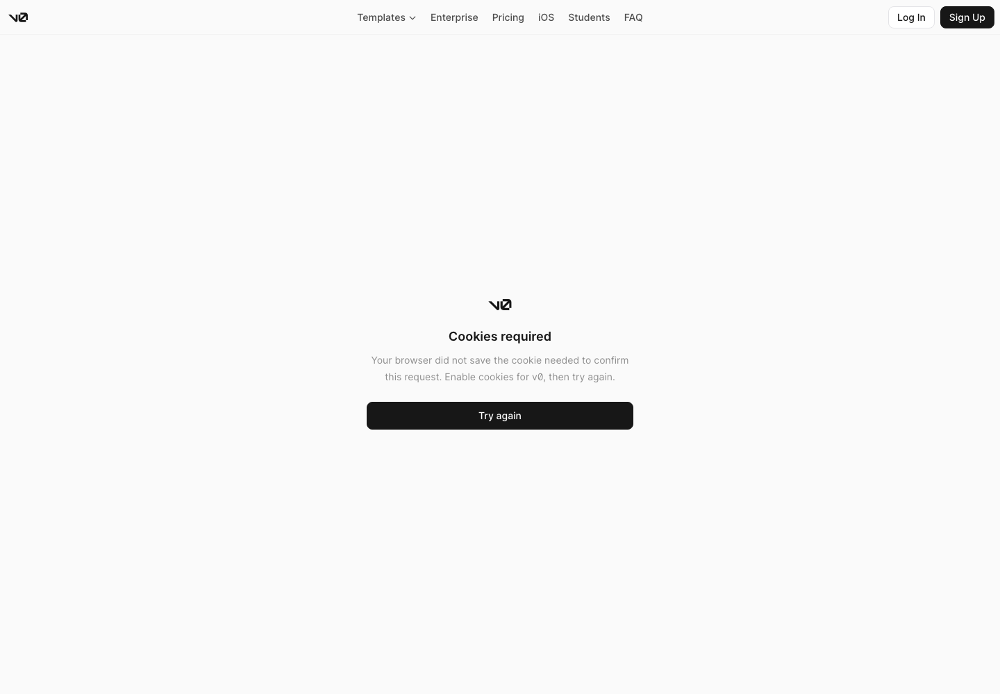
<!doctype html>
<!-- ui-recast reproduction of bklit stat-card-area-01 + stat-card-line-01
Evidence: /tmp/c4-statcard/upstream/*.tsx (block sources, MIT),
bklit.com/r/stat-card-{area,line}-01-example.json + block json (data, example shell),
bklit-ui@cfaa1d0a packages/ui/src/charts/{sparkline,sparkline-geometry,chart-stat-flow,animation}.ts(x),
packages/studio/src/styles/bklit-tokens.css (token values). See record.md. -->
<html lang="en">
<head>
<meta charset="utf-8">
<meta name="viewport" content="width=device-width, initial-scale=1">
<title>Stat Card — ui-recast reproduction</title>
<style>
/* ---- tokens (bklit-tokens.css light values; dark block inferred from the same file) ---- */
:root {
--background: #ffffff;
--foreground: oklch(0.145 0 0);
--card: #ffffff;
--card-border: oklch(0.922 0 0);
--chart-1: #6366f1; /* var(--color-indigo-500) */
--chart-3: #d946ef; /* var(--color-fuchsia-500) */
--chart-crosshair: oklch(0.677 0 72.411);
--chart-label: oklch(0.45 0.01 260);
--emerald: #059669; /* emerald-600 */
--emerald-soft: rgba(16, 185, 129, 0.1);
--emerald-border: rgba(16, 185, 129, 0.2);
--destructive: #dc2626;
}
@media (prefers-color-scheme: dark) {
:root {
--background: oklch(0.145 0 0);
--foreground: oklch(0.985 0 0);
--card: oklch(0.205 0 0);
--card-border: oklch(0.274 0 0);
--chart-1: #818cf8; /* inferred: indigo-400 */
--chart-3: #e879f9; /* inferred: fuchsia-400 */
--chart-crosshair: oklch(0.72 0.0158 281.84);
--chart-label: oklch(0.75 0.01 260);
--emerald: #34d399; /* emerald-400, per trend-badge dark class */
--emerald-soft: rgba(52, 211, 153, 0.1);
--emerald-border: rgba(52, 211, 153, 0.2);
--destructive: #ef4444;
}
}
* { box-sizing: border-box; }
body { margin: 0; background: var(--background); color: var(--foreground);
font-family: ui-sans-serif, system-ui, -apple-system, "Segoe UI", Roboto, "Helvetica Neue", Arial, sans-serif;
-webkit-font-smoothing: antialiased; }
/* example shell: main flex min-h-svh items-center justify-center p-6 md:p-10 */
.wrap { min-height: 100svh; display: flex; align-items: center; justify-content: center; padding: 24px; }
@media (min-width: 768px) { .wrap { padding: 40px; } }
.cards { width: 100%; max-width: 448px; display: flex; flex-direction: column; gap: 24px; }
/* ---- shadcn Card (new-york v4): rounded-xl border bg-card shadow-sm; bklit sets gap-0 py-0 ---- */
.card { background: var(--card); border: 1px solid var(--card-border); border-radius: 12px;
box-shadow: 0 1px 2px 0 rgb(0 0 0 / 0.05); display: flex; flex-direction: column; }
.card-header { position: relative; padding: 12px 16px; }
.card-title { margin: 0; font-size: 14px; font-weight: 600; letter-spacing: 0; line-height: 1.42857; }
.card-title + .badge { position: absolute; top: 12px; right: 16px; }
.card-content-area { display: flex; flex-direction: column; gap: 12px; padding: 8px 16px 12px; }
.card-content-line { padding: 8px 16px 12px; }
/* ---- TrendBadge ---- */
.badge { display: inline-flex; align-items: center; gap: 4px; border-radius: 6px;
border: 1px solid var(--emerald-border); background: var(--emerald-soft); color: var(--emerald);
font-size: 12px; font-weight: 500; line-height: 1.333; padding: 2px 8px; white-space: nowrap; }
.badge.negative { border-color: transparent; background: var(--destructive); color: #fff; }
.badge svg { width: 12px; height: 12px; flex: none; }
/* ---- ChartStatFlow ---- */
.stat { display: block; }
.stat-value { font-size: 30px; font-weight: 600; letter-spacing: -0.025em; line-height: 1;
font-variant-numeric: tabular-nums; color: var(--foreground); }
.stat-label { display: block; margin-top: 2px; font-size: 12px; line-height: 1.333; color: var(--chart-label); }
/* ---- StatCardChart: relative -mx-4 -mb-3 overflow-hidden, height 190px ---- */
.chart-bleed { position: relative; margin: 0 -16px -12px; overflow: hidden; }
.chart-bleed > .spark { height: 190px; }
.chart-bleed > svg { display: block; }
.overlay-stat { position: absolute; right: 16px; bottom: 16px; z-index: 10;
display: flex; flex-direction: column; align-items: flex-end; text-align: right; pointer-events: none; }
</style>
</head>
<body>
<main class="wrap">
<div class="cards">
<!-- stat-card-area-01 -->
<section class="card" aria-label="Total Revenue stat card with area sparkline">
<header class="card-header">
<h2 class="card-title">Total Revenue</h2>
<span class="badge" id="area-badge" hidden><svg viewBox="0 0 24 24" fill="none" aria-hidden="true"></svg><span class="badge-text"></span></span>
</header>
<div class="card-content-area">
<div class="stat">
<span class="stat-value" id="area-value">$6,525</span>
<span class="stat-label" id="area-label">Avg</span>
</div>
<div class="chart-bleed" id="area-chart"></div>
</div>
</section>
<!-- stat-card-line-01 -->
<section class="card" aria-label="Active Sessions stat card with line sparkline">
<header class="card-header">
<h2 class="card-title">Active Sessions</h2>
<span class="badge" id="line-badge" hidden><svg viewBox="0 0 24 24" fill="none" aria-hidden="true"></svg><span class="badge-text"></span></span>
</header>
<div class="card-content-line">
<div class="chart-bleed" id="line-chart">
<div class="overlay-stat">
<span class="stat-value" id="line-value">1,344</span>
<span class="stat-label" id="line-label">Avg</span>
</div>
</div>
</div>
</section>
</div>
</main>
<script>
"use strict";
/* ============ evidence: registry data (bklit.com/r/stat-card-*-01.json) ============ */
const revenueSeries = [
{ date: "2024-01-01", value: 5200 }, { date: "2024-02-01", value: 6100 },
{ date: "2024-03-01", value: 5400 }, { date: "2024-04-01", value: 4700 },
{ date: "2024-05-01", value: 5100 }, { date: "2024-06-01", value: 6800 },
{ date: "2024-07-01", value: 6400 }, { date: "2024-08-01", value: 7200 },
{ date: "2024-09-01", value: 6900 }, { date: "2024-10-01", value: 8100 },
{ date: "2024-11-01", value: 7600 }, { date: "2024-12-01", value: 8800 },
];
const revenueStats = { average: revenueSeries.reduce((s, p) => s + p.value, 0) / revenueSeries.length, trend: 12.4 };
const sessionsSeries = [
{ date: "2024-06-03", value: 920 }, { date: "2024-06-04", value: 1380 },
{ date: "2024-06-05", value: 1120 }, { date: "2024-06-06", value: 1580 },
{ date: "2024-06-07", value: 1240 }, { date: "2024-06-08", value: 1710 },
{ date: "2024-06-09", value: 1460 },
];
const sessionsStats = { average: sessionsSeries.reduce((s, p) => s + p.value, 0) / sessionsSeries.length, trend: 8.2 };
const reduceMotion = matchMedia("(prefers-reduced-motion: reduce)").matches;
const ENTER_MS = 900; // DEFAULT_SPARKLINE_ANIMATION_DURATION_MS
const ENTER_EASE = "cubic-bezier(0.85, 0, 0.15, 1)"; // DEFAULT_ANIMATION_EASING
const HOVER_FADE = "opacity 400ms ease-in-out"; // HOVER_FADE
const SPRING = { stiffness: 300, damping: 30 }; // DEFAULT_SPARKLINE_HOVER_SPRING
/* ============ geometry port (sparkline-geometry.ts) ============ */
function layout(values, width, height, domain) {
const [d0, d1] = domain, inner = height;
const yOf = v => inner - ((v - d0) / (d1 - d0)) * inner;
const step = values.length > 1 ? width / (values.length - 1) : 0;
const points = values.map((value, i) => ({ x: step * i, y: yOf(value), value }));
const baseline = Math.min(Math.max(0, d0), d1);
return { points, baselineY: yOf(baseline) };
}
function headroomDomain(values) { // stat cards pass ±5% headroom explicitly
const min = Math.min(...values), max = Math.max(...values);
const pad = (max - min) * 0.05;
return [min - pad, max + pad];
}
/* d3 curveMonotoneX (Fritsch–Carlson), ported */
function monotonePath(points) {
const n = points.length;
if (n < 2) return "";
const xs = points.map(p => p.x), ys = points.map(p => p.y);
const dx = [], s = [];
for (let i = 0; i < n - 1; i++) { dx.push(xs[i + 1] - xs[i]); s.push((ys[i + 1] - ys[i]) / (xs[i + 1] - xs[i])); }
const m = [s[0]];
for (let i = 1; i < n - 1; i++) {
if (s[i - 1] * s[i] <= 0) m.push(0);
else m.push(3 * (dx[i] + dx[i - 1]) / ((2 * dx[i] + dx[i - 1]) / s[i - 1] + (dx[i] + 2 * dx[i - 1]) / s[i]));
}
m.push(s[n - 2]);
let d = `M${xs[0]},${ys[0]}`;
for (let i = 0; i < n - 1; i++) {
const cx1 = xs[i] + dx[i] / 3, cy1 = ys[i] + m[i] * dx[i] / 3;
const cx2 = xs[i + 1] - dx[i] / 3, cy2 = ys[i + 1] - m[i + 1] * dx[i] / 3;
d += `C${cx1},${cy1} ${cx2},${cy2} ${xs[i + 1]},${ys[i + 1]}`;
}
return d;
}
function describeSparkline(values) { // upstream describeSparkline
const finite = values.filter(Number.isFinite);
const first = finite[0], last = finite.at(-1);
const fmt = new Intl.NumberFormat(undefined, { notation: "compact", maximumFractionDigits: 2 });
let out = `${finite.length} points, from ${fmt.format(first)} to ${fmt.format(last)}`;
if (first !== 0) {
const change = ((last - first) / Math.abs(first)) * 100;
out += `, ${change >= 0 ? "up" : "down"} ${Math.abs(Math.round(change))}%`;
}
return out;
}
/* ============ spring (crosshair x, dot x/y) ============ */
function springTo(state, target, t) {
const steps = Math.max(1, Math.round(t / (1000 / 120)));
const dt = (t / 1000) / steps;
for (let i = 0; i < steps; i++) {
const a = SPRING.stiffness * (target - state.v) - SPRING.damping * state.vel;
state.vel += a * dt;
state.v += state.vel * dt;
}
}
/* ============ NumberFlow substitute: interpolated tabular counter ============ */
function makeCounter(el, format) {
let from = null, start = 0, raf = 0, target = null, shown = null;
const draw = now => {
const t = Math.min(1, (now - start) / 400);
const eased = 1 - Math.pow(1 - t, 3);
const value = from + (target - from) * eased;
el.textContent = format(value);
if (t < 1) raf = requestAnimationFrame(draw); else shown = target;
};
return value => {
if (target === null || reduceMotion) { target = value; from = value; el.textContent = format(value); return; }
if (value === target) return;
from = shown ?? value; target = value; start = performance.now();
cancelAnimationFrame(raf); raf = requestAnimationFrame(draw);
};
}
/* ============ TrendBadge ============ */
const TREND_UP = '<path d="M12 20.25V4.5"/><path d="M5.75 10L12 3.75L18.25 10"/>';
const TREND_DOWN = '<path d="M18.25 14L12 20.25L5.75 14"/><path d="M12 19.5V3.75"/>';
function setBadge(el, value) {
el.hidden = false;
const positive = value >= 0;
el.classList.toggle("negative", !positive);
el.querySelector("svg").innerHTML = positive ? TREND_UP : TREND_DOWN;
el.querySelector(".badge-text").textContent = `${positive ? "+" : ""}${value.toFixed(1)}%`;
}
/* ============ sparkline engine (sparkline.tsx behavior, vanilla) ============ */
function createSparkline(host, { series, variant, color, strokeWidth, inactiveOpacity, formatLabel, onIndex }) {
const values = series.map(p => p.value);
const domain = headroomDomain(values);
const height = 190;
const NS = "http://www.w3.org/2000/svg";
// the engine owns a .spark layer; other host children (the line card's overlay) stay untouched
let spark = host.querySelector(":scope > .spark");
if (!spark) { spark = document.createElement("div"); spark.className = "spark"; host.appendChild(spark); }
spark.innerHTML = "";
const svg = document.createElementNS(NS, "svg");
svg.setAttribute("role", "img");
svg.setAttribute("aria-label", describeSparkline(values));
svg.style.touchAction = "pan-y";
spark.appendChild(svg);
const uid = "g" + Math.random().toString(36).slice(2, 8);
const mk = (tag, attrs) => { const node = document.createElementNS(NS, tag); for (const [k, v] of Object.entries(attrs)) node.setAttribute(k, v); return node; };
const group = mk("g", {}); // base series group (dims on hover)
const fxGroup = mk("g", {}); // crosshair line only (translates); dot is a sibling (upstream structure)
const dot = mk("circle", { r: 3, fill: color, stroke: "var(--card)", "stroke-width": 1.5, "pointer-events": "none" });
dot.style.display = "none";
const crossRect = mk("rect", { width: 1, height: height, x: -0.5, y: 0, fill: "", "pointer-events": "none" });
crossRect.style.display = "none";
fxGroup.append(crossRect);
group.style.transition = HOVER_FADE;
let linePath, areaPath, fillDefs = "";
const stateX = { v: 0, vel: 0 }, stateY = { v: 0, vel: 0 };
let hoverIndex = null, raf = 0, width = 0, points = [];
function build() {
width = host.clientWidth;
if (width <= 0) return;
const geo = layout(values, width, height, domain);
points = geo.points;
const d = monotonePath(points);
linePath = d;
areaPath = variant === "area" ? `${d}L${points.at(-1).x},${geo.baselineY}L${points[0].x},${geo.baselineY}Z` : "";
fillDefs = variant === "area"
? `<linearGradient id="${uid}" x1="0" x2="0" y1="0" y2="1">
<stop offset="0" stop-color="${color}" stop-opacity="0.45"/>
<stop offset="1" stop-color="${color}" stop-opacity="0"/>
</linearGradient>
<linearGradient id="${uid}-x" x1="0" x2="0" y1="0" y2="1">
<stop offset="0" stop-color="var(--chart-crosshair)" stop-opacity="0"/>
<stop offset="0.5" stop-color="var(--chart-crosshair)" stop-opacity="1"/>
<stop offset="1" stop-color="var(--chart-crosshair)" stop-opacity="0"/>
</linearGradient>` : "";
crossRect.setAttribute("fill", `url(#${uid}-x)`);
render();
}
function render() {
svg.setAttribute("width", width); svg.setAttribute("height", height);
svg.setAttribute("viewBox", `0 0 ${width} ${height}`);
const area = variant === "area" ? `<path d="${areaPath}" fill="url(#${uid})"/>` : "";
group.innerHTML = `${area}<path d="${linePath}" fill="none" stroke="${color}" stroke-width="${strokeWidth}"
stroke-linecap="round" stroke-linejoin="round" pathLength="1" class="line"/>`;
svg.innerHTML = `<defs>${fillDefs}</defs>`;
svg.append(group, fxGroup, dot);
if (!entered) {
entered = true;
if (!reduceMotion) {
if (variant === "area") {
// area wipes in left → right on its group
group.style.clipPath = "inset(0 100% 0 0)";
group.animate([{ clipPath: "inset(0 100% 0 0)" }, { clipPath: "inset(0 0% 0 0)" }],
{ duration: ENTER_MS, easing: ENTER_EASE, fill: "forwards" });
} else {
// line draws in along its stroke
const line = group.querySelector("path");
line.style.strokeDasharray = "1";
line.animate([{ strokeDashoffset: 1 }, { strokeDashoffset: 0 }],
{ duration: ENTER_MS, easing: ENTER_EASE, fill: "forwards" });
}
}
}
}
let entered = false;
function applyHover() {
group.style.opacity = hoverIndex === null ? 1 : inactiveOpacity;
const show = hoverIndex !== null;
crossRect.style.display = show ? "" : "none";
dot.style.display = show ? "" : "none";
if (show) {
const p = points[hoverIndex];
const tick = () => {
fxGroup.setAttribute("transform", `translate(${stateX.v},0)`);
dot.setAttribute("cx", stateX.v); dot.setAttribute("cy", stateY.v);
const doneX = Math.abs(stateX.v - p.x) < 0.5 && Math.abs(stateY.v - p.y) < 0.5;
if (!doneX) { springTo(stateX, p.x, 16); springTo(stateY, p.y, 16); raf = requestAnimationFrame(tick); }
};
cancelAnimationFrame(raf); raf = requestAnimationFrame(tick);
} else cancelAnimationFrame(raf);
onIndex(hoverIndex);
}
svg.addEventListener("pointermove", event => {
const rect = svg.getBoundingClientRect();
const t = (event.clientX - rect.left) / width;
const index = Math.min(values.length - 1, Math.max(0, Math.round(t * (values.length - 1))));
if (index !== hoverIndex) { hoverIndex = index; applyHover(); }
});
svg.addEventListener("pointerleave", () => { hoverIndex = null; applyHover(); });
new ResizeObserver(build).observe(host);
build();
onIndex(null); // mount state: Avg + overall trend (upstream renders displayTrend ?? stats.trend)
}
/* ============ cards ============ */
const usd = new Intl.NumberFormat("en-US", { style: "currency", currency: "USD", maximumFractionDigits: 0 });
const int = new Intl.NumberFormat("en-US", { maximumFractionDigits: 0 });
const month = date => new Date(date).toLocaleDateString("en-US", { month: "short" });
const weekday = date => new Date(date).toLocaleDateString("en-US", { weekday: "long" });
const trend = (series, i) => i <= 0 ? null : ((series[i].value - series[i - 1].value) / series[i - 1].value) * 100;
const areaValue = makeCounter(document.getElementById("area-value"), v => usd.format(v));
const areaLabel = document.getElementById("area-label");
const areaBadge = document.getElementById("area-badge");
createSparkline(document.getElementById("area-chart"), {
series: revenueSeries, variant: "area", color: "var(--chart-1)", strokeWidth: 2, inactiveOpacity: 0.5,
formatLabel: month,
onIndex: i => {
const hoverValue = i === null ? null : revenueSeries[i].value;
areaValue(hoverValue ?? revenueStats.average);
areaLabel.textContent = i === null ? "Avg" : month(revenueSeries[i].date);
setBadge(areaBadge, i === null || trend(revenueSeries, i) === null ? revenueStats.trend : trend(revenueSeries, i));
},
});
const lineValue = makeCounter(document.getElementById("line-value"), v => int.format(Math.round(v)));
const lineLabel = document.getElementById("line-label");
const lineBadge = document.getElementById("line-badge");
createSparkline(document.getElementById("line-chart"), {
series: sessionsSeries, variant: "line", color: "var(--chart-3)", strokeWidth: 2.5, inactiveOpacity: 0.4,
formatLabel: weekday,
onIndex: i => {
const hoverValue = i === null ? null : sessionsSeries[i].value;
lineValue(hoverValue ?? Math.round(sessionsStats.average));
lineLabel.textContent = i === null ? "Avg" : weekday(sessionsSeries[i].date);
setBadge(lineBadge, i === null || trend(sessionsSeries, i) === null ? sessionsStats.trend : trend(sessionsSeries, i));
},
});
</script>
</body>
</html>
集成点：web/src/components/bklit/StatCard.tsx（StatCard） —— 按本项目 achromatic 设计规范适配后投入使用。
| 组件 | 反馈 |
|---|---|
| Gauge 预算表盘 |
|
| Heatmap 每日支出月历 |
|
| stat-card 资产账户卡 |
|
| Profit / Loss Line 每日结余 |
|